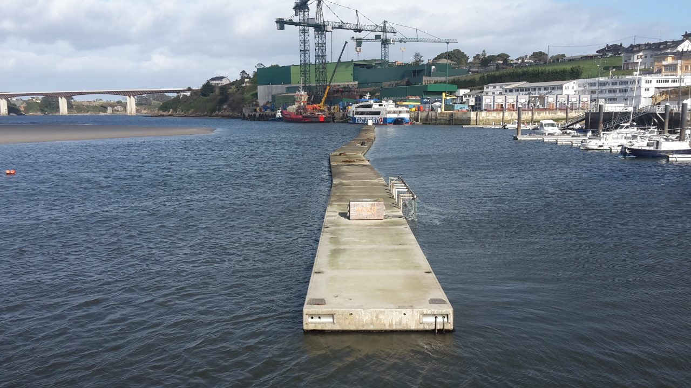

Entendemos cómo vibran, se fatigan y fallan las estructuras reales.
Ensayos de fatiga hasta 1000 kN, análisis modal y monitorización, cálculo a fatiga y simulación offshore para empresas, desde el laboratorio de la Universidad de Oviedo en Gijón.
¿Buscas hacer un TFG, TFM o una tesis doctoral? Investiga con nosotros →
Empresas e instituciones que han trabajado con nosotros
- Gonvarri Solar Steel
- ArcelorMittal
- Ikerlan
- ThyssenKrupp Airport Solutions
- Gamesa Eólica
- Fiberblade Eólica
- Applus+ Norcontrol
- Perfilados del Norte
- Thingtrack
- Servicio de Puertos del Principado de Asturias
- Autoridad Portuaria de Vigo
- Safier Ingénierie
Ensayamos, calculamos y monitorizamos estructuras reales
Qué podemos hacer por tu empresa
Ensayos mecánicos y de fatiga, cálculo estructural, análisis modal y monitorización, ingeniería offshore y formación a medida.
Ver servicios → EquipamientoDe una probeta a un edificio
Máquinas MTS hasta 1000 kN, resonancia RUMUL hasta 200 Hz, 58 acelerómetros, vibrometría láser y mesa vibrante.
Ver equipamiento → CasosDel laboratorio al problema real
Aerogeneradores, diques flotantes, la torre de la Universidad Laboral, rodamientos de grandes dimensiones y más.
Ver casos → InvestigaciónSeis líneas y proyectos competitivos
Análisis modal, fatiga, estructuras marinas, viscoelasticidad, vidrio estructural y hormigón; proyectos nacionales, europeos y público-privados.
Ver investigación → EquipoQuiénes hacen DyMaSt
Profesorado e investigadores del área de Mecánica de Medios Continuos y Teoría de Estructuras, con sus trayectorias y publicaciones.
Conocer al equipo → ÚneteTFG, TFM y tesis doctoral
Investiga en problemas de ingeniería reales con equipamiento propio y en proyectos con empresas y universidades.
Investiga con nosotros →¿Tienes un reto de ingeniería?
Cuéntanos tu necesidad y estudiaremos cómo podemos ayudarte.